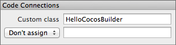
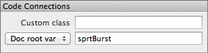
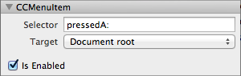
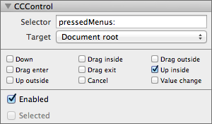
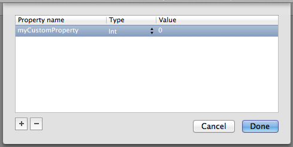

For any non-trivial use of CocosBuilder you will need to connect your ccb-files with your code. This section explains how this works.
The way you can link your code with CocosBuilder is to use custom classes. To assign a custom class to an object in CocosBuilder, just select the object then enter the name of your custom class in the property inspector. Remember that your custom class needs to be a sub class of the selected object. When loading the ccbi-file CCBReader will initialize your custom class using the super class’s init method, then set all of the objects properties. If you need to do any extra initialization of your object after the properties are set, CCBReader will call the didLoadFromCCB method.

Please note that CCBReader will not be able to use any custom init methods. You will need to have a working plain init method for all custom classes that you use with CocosBuilder. You can use custom classes for any node in you ccb-file, however the most common use is to override the root node.
References to objects in your ccbi-file can be linked to member variables when the file is loaded. These member variables can be either in the root node of the document, in which case it must have been assigned a custom class. You can also assign them to a custom object, which is optionally passed as the owner object to the CCBReader. To load ccbi-file and assign members to it’s owner, the node graph needs to be loaded by calling either the nodeGraphFromFile:owner: or the sceneWithNodeGraphFromFile:owner: methods.

To link an object, simply declare them in the header file, either in the object you plan to pass as the owner or in the custom class of your document root object. Select the object in CocosBuilder, under Code Connections change the Don’t assign popup menu to either Doc root var or Owner var. Then enter the name of your member variable to the right of the popup menu.
To add a callback when a CCMenuItemImage is tapped, simply select the CCMenuItemImage in CocosBuilder, then add the name of the method you want to call in the Selector field. Set the target either to the Document root or the Owner.

The callback will send the CCMenuItemImage as its only parameter to the method that you specify (it uses the id type, and is often named sender). You can also chose to leave the parameter out.
Adding a callback to a CCControl is similar to adding a callback to a CCMenuItemImage, it just have a few extra options.

Tick the event types that you want to receive callbacks for. For CCControlButton it is most common to use the Up inside callback only. Select your target, either Document root or Owner, and the name of your callback method. The callback method can optionally take two arguments, the sender (i.e. the CCControl) and the type of event. The event types are defined in CCControl.h.
Sometimes it can be useful to be able to specify a number of extra properties to a custom class. If you have set the custom class of a node a Edit Custom Properties button will appear at the bottom of the inspector. Pressing the button brings up the custom properties window.

Here you can add the custom properties, make sure that the same properties are defined in your code. You can use int, float, BOOL or NSString properties. For NSString the property should be defined as retain or copy, and for the other types as assign.
If you use custom properties for your root node and include it as a sub ccb-file in another document you will be able to override the values of the properties. Just select the sub ccb-file and edit the values in the property inspector.
CocosBuilder documents, or ccb-files, needs to be published into a compact binary format, ccbi, before they can be loaded into your application. Once published they can be easily loaded with a single line of code. To load a node graph, add the CCBReader.h and CCBReader.m files to your Cocos2D project, then call the nodeGraphFromFile: method as follows.
CCNode* myNode = [CCBReader nodeGraphFromFile:@"MyNodeGraph.ccbi"];
You may need to cast the returned value depending on what sort of object is the root node in your ccbi-file and how you will use it in your code. For instance, if you load a CCParticleSystem, use the following code.
CCParticleSystem* myParticles = (CCParticleSystem*) [CCBReader nodeGraphFromFile:@"MyParticleSystem.ccbi"];
For your convenience, CCBReader can also wrap your node graph in a scene. To load your ccbi-file in a scene call sceneWithNodeGraphFromFile:
CCScene* myScene = [CCBReader sceneWithNodeGraphFromFile:@"MyScene.ccbi"];
Sometimes you need to be able to access member variables from and get callbacks to another object than the root node of a ccb-file. To do this you will need to pass a owner to the CCBReader. To get the variable or callback assigned to the owner, make sure that you’ve selected owner when declaring the member variable name or callback in CocosBuilder. The call the nodeGraphFromFile:owner: or sceneWithNodeGraphFromFile:owner: method of CCBReader when loading your file.
MyCallbackClass* callbackClass = [[MyCallbackClass callbackClass alloc] init];
CCNode* myNode = [CCBReader nodeGraphFromFile:@"MyNodeGraph.ccbi" owner:callbackClass];
If you are using sub ccb-files specifying the root node as target will refer to the root node of the sub ccb-file. The owner target is the object that you pass to the CCBReader.